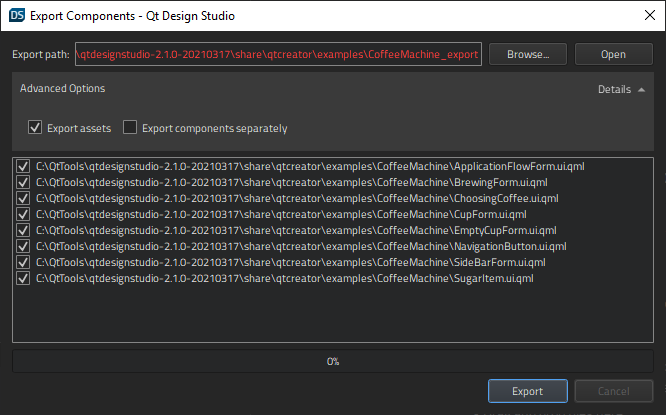

Exporting Components
Note: In this section, you are using advanced menu items. These are not visible by default. To toggle the visibility of advanced menu items, see Customizing the Menu.
Components contained in UI files (.ui.qml) can be exported to JSON metadata format and PNG assets.
To export the UI files from the current project, select Build > Export Components.
The primary use of exported metadata and assets is to generate native file formats in content creation tools, such as Adobe Photoshop, using Qt Bridge. Qt Bridge for Adobe Photoshop can generate PSD files by importing the metadata and assets.
Components are exported as follows:
- Components (QML types) inherited from Item are exported, other components are ignored.
- Text components are exported as metadata only and no assets are generated.
- Rectangle and Image components generate assets as PNG files.
Configuring QML Export
You can configure the export in the Export Components dialog, which lists the UI files (.ui.qml) of the current project.

- In the Export path field, specify the path where the metadata file and assets are exported.
- Deselect the Export assets check box to disable exporting assets and only generate the metadata file.
- Select the Export components separately check box to generate separate metadata files for each component.
- In the file list, select the .ui.qml files to be exported.
- Select Export export to start the export process.